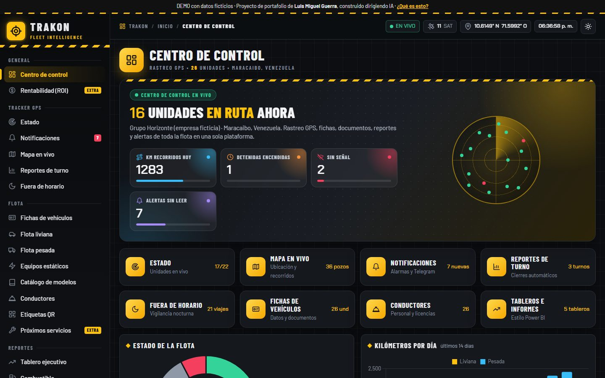

Centro de controlFlota · GPS · Reportes
TRAKONFleet Intelligence
Rastreo GPS y gestión de flota: dónde está cada unidad, qué hizo en cada turno, quién la maneja y qué documentos tiene vigentes.
- Mapa en vivo con 26 unidades, geocercas y 36 pozos
- Alertas con avisos por Telegram y vigilancia nocturna
- Reportes de turno en Excel, PDF e imagen
- Fichas de vehículos y conductores con foto, documentos y QR
- 5 tableros tipo Power BI con filtros cruzados
Una flota de 20–30 unidades puede ahorrar 1.500–3.000 USD al mes en ralentí, uso no autorizado y reportes manuales.
JavaScriptLeafletChart.jsSVG propiosModo claro/oscuro